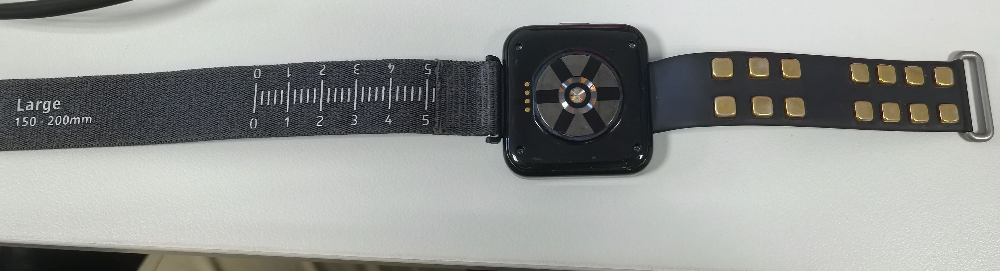
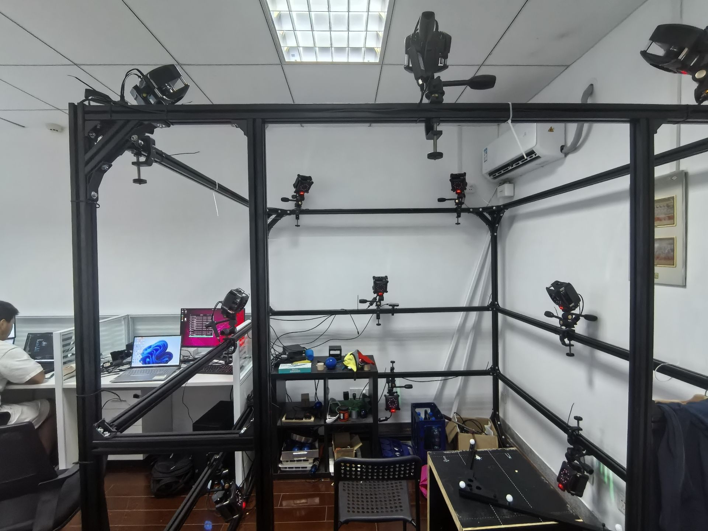
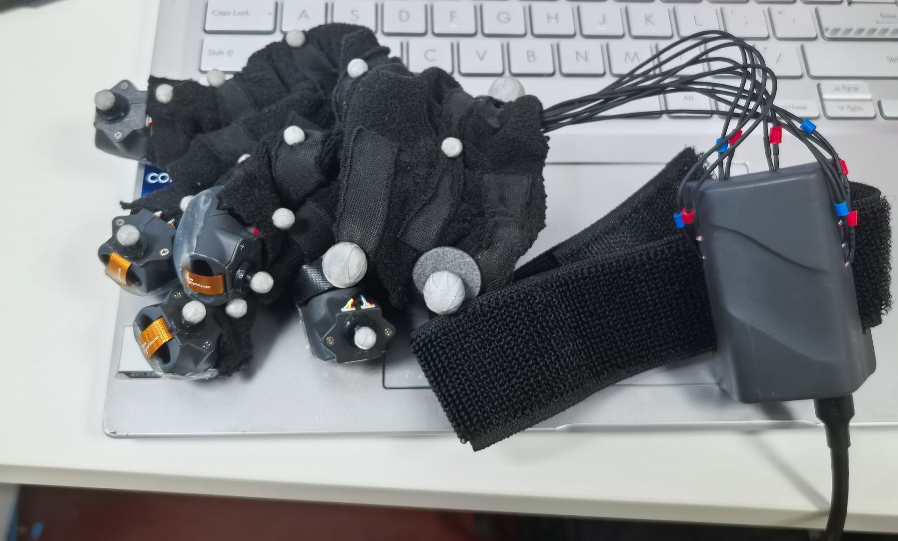
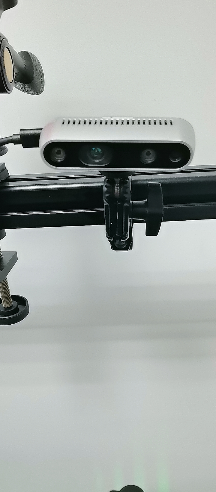
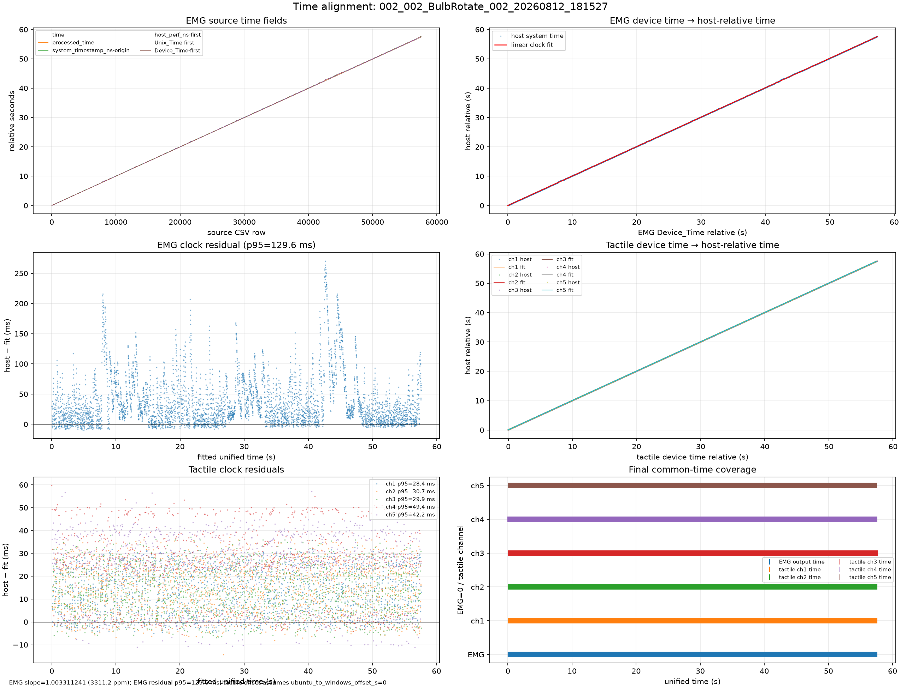
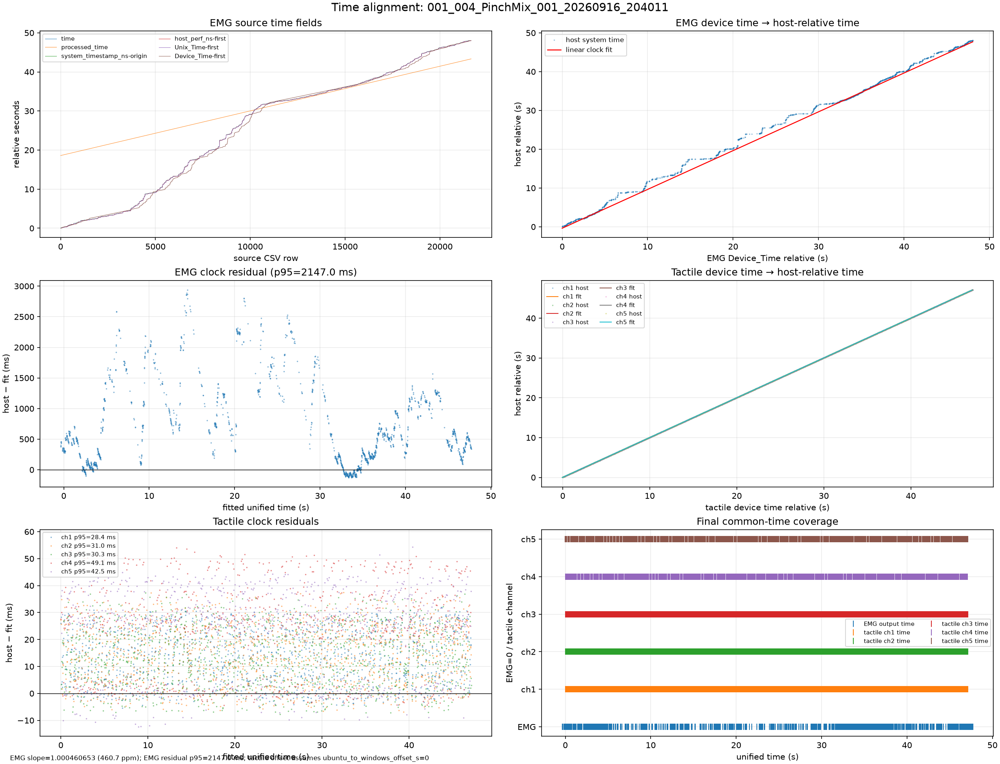
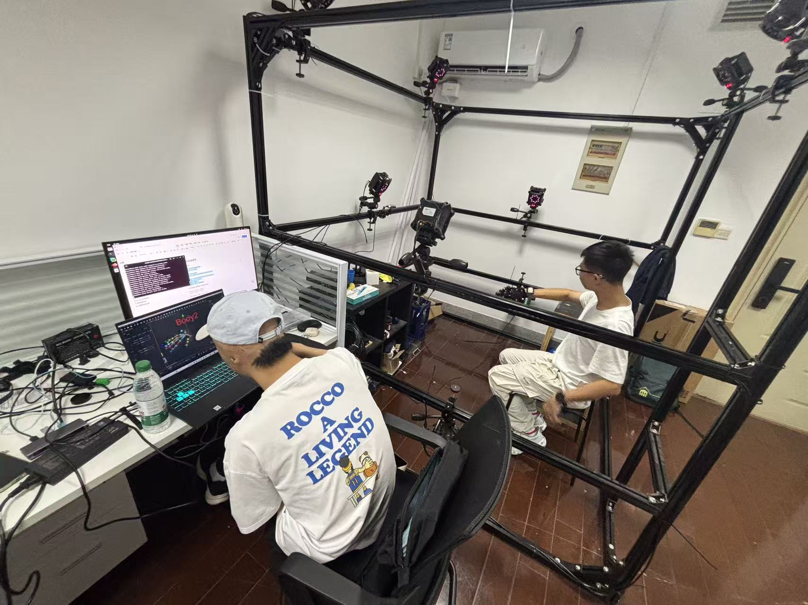

01 — VISION
视觉会失效
复杂操作中，手部自遮挡、物体遮挡与视角变化可能造成关键姿态信息丢失。
基于表面肌电与多模态感知的连续手部状态估计研究
遥操作与灵巧操作要求系统连续理解“手在做什么、正在施加多大作用力”。相机提供直观的空间信息，却会受到视角、光照和遮挡影响。
复杂操作中，手部自遮挡、物体遮挡与视角变化可能造成关键姿态信息丢失。
表面肌电反映肌肉激活，与运动意图和发力过程相关，不依赖外部视觉环境。
融合肌电、惯性、动作捕捉和深度视觉，实现稳定连续的手部状态估计，为基础遥操作提供输入。
核心问题：在视觉受遮挡时，能否从可穿戴信号中恢复手部运动状态，并估计与操作相关的交互力？
sEMG、IMU，并以 NOKOV、RealSense 提供动作与场景观测。
预测手部运动状态及多通道触觉力特征，评估连续性与误差。
比较多模态与单模态方案，分析视觉信息受限时的性能变化。
完善多模态采集流程、动作范式与受试者数据规模。
以 NOKOV 动作捕捉建立运动真值，推进跨设备时间对齐。
实现可信的姿态与力预测，并在遮挡场景中完成基础动作映射与力度调节演示。

北京歌尔泰克科技有限公司自研样机
采集肌肉激活与惯性信号

多相机覆盖采集空间
建立连续运动与姿态真值

力传感器记录多通道接触力
为交互力预测提供监督标签

采集 RGB 与深度视频
提供手部与场景视觉观测

多模态设备共同记录同一操作过程；右侧为拟合较好的 BulbRotate 会话时间对齐示例。
实验表现：首轮数据覆盖的人群、动作和发力强度有限，同一受试者的重复会话不能替代人群多样性。
训练影响：模型容易记住个人肌电模式，难以提炼不同操作者共有的运动与发力规律。
解决路径：扩充受试者、动作类型和重复佩戴数据，按受试者与会话划分训练、验证及测试集。
实验表现：肌电易受运动伪迹、电极接触、佩戴位置及肌肉疲劳影响，同一动作的信号会发生变化。
训练影响：噪声掩盖有效激活特征，跨次佩戴与跨人使用时预测稳定性下降。
解决路径：统一佩戴与校准流程，开展滤波、归一化和信号质检，并比较跨会话、跨受试者表现。
实验表现：学长留下的代码库缺少直观的多设备对照视图，时间字段的来源、单位和语义不统一。
训练影响：异常段与标签错位难以定位，模型误差难以追溯到采集、对齐或建模环节。
解决路径：梳理时间字段，统一日志与数据接口，输出原始信号、对齐残差及标签的联动可视化。
这是设备时间映射到主机时间的拟合残差，用于定位传输与时钟问题；跨模态对齐还需公共事件核验。

图中肌电时间映射出现阶梯与间断；触觉各通道拟合残差 P95 约为 28–49 ms。全局线性拟合仍留下明显的局部肌电时间偏差。
当前力采集以短时捏合等爆发性动作为主，有效接触时间短，大部分力测量值为 0，持续发力与不同强度的样本不足。
还需区分真实无接触零值与设备异常、缺失记录，避免把异常值作为训练标签。
零值主导损失函数，模型倾向输出接近零的结果，造成发力峰值低估、接触起止时刻偏移。
仅看整体平均误差难以判断实际控制价值，必须单独评估非零接触段、峰值和持续发力段。
增加稳定握持、持续捏合、缓慢加载与卸载，覆盖轻、中、重不同力度，并平衡接触和非接触窗口。
比较分层采样、加权损失及接触状态辅助预测；分别报告全时段和有效发力段的 R²、MAE 与 RMSE。

记录采样率、丢包、漂移与设备时间戳语义。
从 sEMG 单模态基线起步，逐步加入 IMU 与其他信息。
报告 MAE、RMSE、R²、延迟与受试者间泛化表现。
不以“听到提示就完成动作”作为标签依据，而是使用 NOKOV 记录实际运动时序与姿态，建立连续动作真值。
融合肌电与惯性等可穿戴信息，并利用触觉力与动作捕捉进行监督和验证。
同时建模手部运动与交互力，让输出既表达动作意图，也为遥操作中的握持与力度调节提供依据。
在独立测试会话中评估姿态与力预测，报告 R²、MAE 与 RMSE，并检验动作变化、接触起止及发力峰值的跟随效果。
将模型输出映射为虚拟场景中的动作与交互响应，连续展示信号输入、预测输出与动画反馈。
对照实际手部动作，观察响应方向、动作连续性与延迟，验证预测结果对基础遥操作的支持能力。
以可视化反馈展示动作输入与场景响应的对应关系。
扩充受试者与动作样本；完善设备状态、时间戳和丢包记录。
核验设备时间轴、包内采样间隔与标签质量；建立单模态基线，补充持续发力并平衡零值窗口。
逐步加入 IMU 等信息；比较输入组合、时间窗和预测目标。
开展独立测试和遮挡实验，验证 R² 目标；完成基础遥操作演示，汇总任务成功率、误差与延迟。
请批评指正